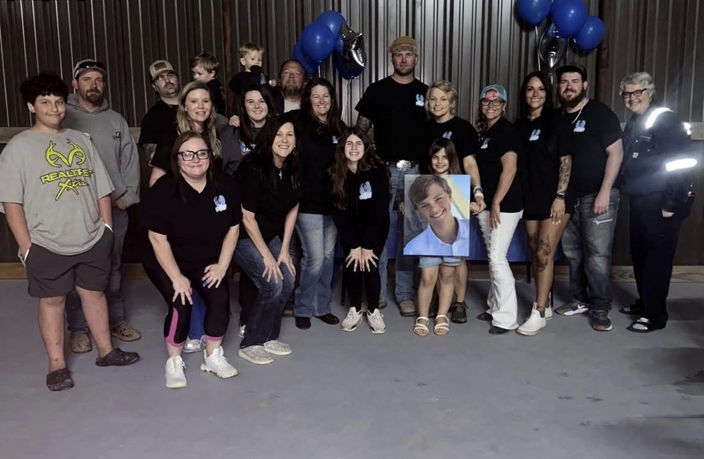
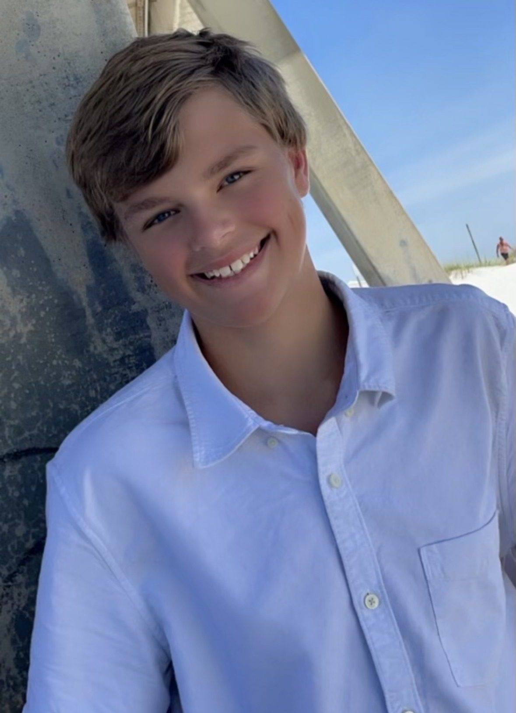
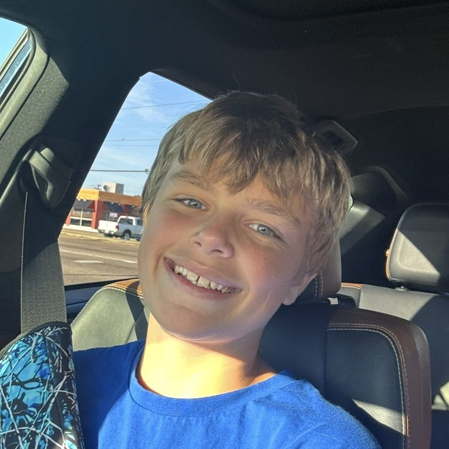
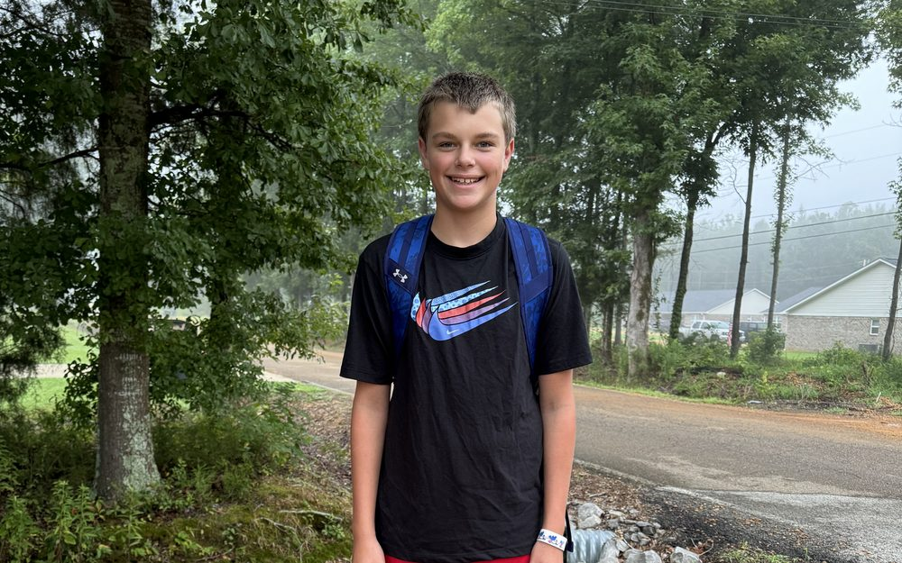
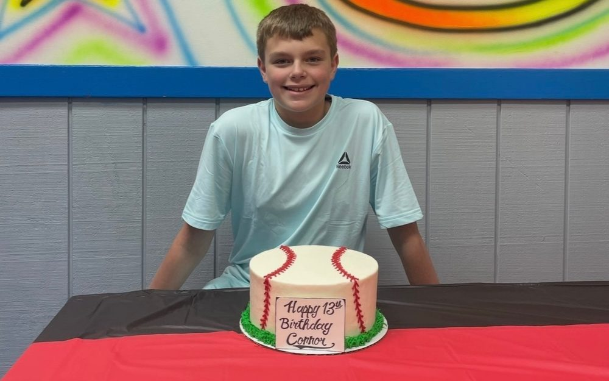
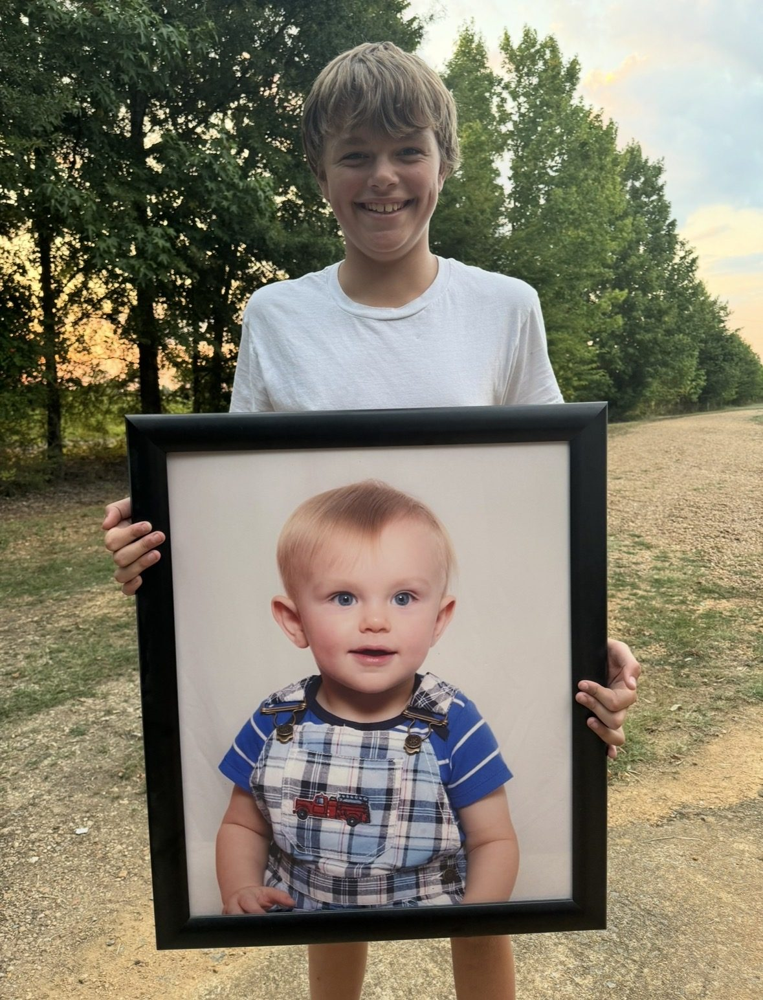
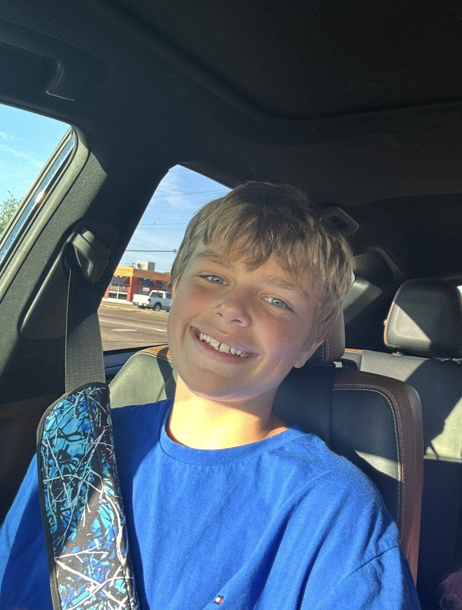

01
Community Support
We show up for families in their hardest moments, the way our community showed up for us: in person, together.
The Forever 13 Foundation · Est. 2024 · Mississippi
We are a family-run nonprofit born from the kindness of one boy, Connor Taylor. When a family near us gets hit by an unexpected tragedy, we show up: with support, with fundraising, and with the same neighborly love that carried us through our own darkest season.

Our mission
When the worst day comes, nobody around here faces it alone.
A warm meal on the porch. A room full of people who refuse to let you fall. That is what our community gave us when we lost Connor, and it is exactly what we give back, family by family.

What we do
When we lost Connor, our community covered funeral costs, brought food to the door, and prayed for us through the hardest days of our lives. The Forever 13 exists to pass that same support forward.

We show up for families in their hardest moments, the way our community showed up for us: in person, together.

Events, drives, and gifts from people like you become real, direct help for families facing sudden hardship.

Connor gave without being asked. We carry his everyday generosity into the lives of people who need it most.
Every bit helps.
Donate to the causeGet involved
Every dollar goes to The Forever 13 Foundation to help families in need as soon as possible.
DonateHelp us organize an event, start a collection, or dedicate a birthday. We will help you make it count.
Share Connor's story and our mission. The more people who know, the more families we reach.
See our storyThe heart behind it all


Connor Taylor had a heart far bigger than his 13 years. He cared about people. He loved giving. He loved helping.
He was one of the kindest, most humble, and well mannered kids anyone could ever meet, and he never expected a thing in return.
Every day after the school bus, Connor crossed the street just to sit and talk with our neighbor. On holidays, he fixed her a plate of food and carried it over himself. That was simply who he was.
We lost Connor in August 2024. In the days after, we learned his caring spirit had reached further than any of us ever knew. The Forever 13 is how we say thank you: by giving that same love to the next family who needs it.
Keep Smiling.
Connor's words, and the way we choose to remember himIn his memory, we keep his song close: “Dancing in the Sky.”
With all our love,
Connor's family
The family behind The Forever 13

The foundation is run by Connor's own family, the people his kindness shaped, carrying his memory forward together. Tap a name to meet the Board of Directors and the Officers.
Collin is the President of The Forever 13 Foundation, established to give back to the community that supported his family after the tragic loss of his 13-year-old cousin, Connor. A dedicated local business owner, husband to Stephanie, and father of two, Collin leads the foundation to turn a family tragedy into a lasting legacy of hope. He pours his gratitude into helping other local families and keeping his cousin's memory alive.
Chelsea serves as the Vice President, driven by her deep love for her younger cousin, Connor. As his older cousin, she channels her grief into building a supportive community legacy that honors his beautiful life. Chelsea is also a dedicated wife who works closely with her family to ensure that no one walks through tragedy alone.
Becky serves as the Treasurer, driven by her deep love for her nephew, Connor, and a fierce dedication to honoring his memory. As his aunt, she ensures that every single dollar donated to the organization is managed with absolute integrity and directed toward a good cause. Becky is also a devoted wife and mother who pours her heart into giving back to the community that stood by her family.
April serves as the Secretary, bringing both her professional diligence and deep love as Connor's cousin to the role. She is responsible for capturing every detail of the organization's meetings and minutes, ensuring the foundation runs smoothly and purposefully. Driven by her bond with her cousin, April is dedicated to preserving his legacy and helping the community that fiercely supported her family.
Brandy serves as the Outreach and Social Media Representative, bringing a mother's profound love and dedication to the heart of the organization. As Connor's mother, she pours her entire soul into reaching as many people as possible, securing the donations needed to support local families facing sudden tragedy. Brandy transforms her personal loss into an unstoppable mission of empathy, ensuring that the same community care that carried her family is extended to others in their most difficult moments.
Alvin serves as a vital member of the Board of Directors, bringing his deep commitment to Connor's memory as his cousin. He works hands-on across all aspects of the foundation to ensure the organization stays true to its mission of community support.
Jason is a dedicated Board Member who actively assists with all aspects of the foundation out of deep love for his cousin, Connor. His versatile support in planning and operations helps the organization grow and effectively deliver aid to families experiencing tragedy.
Stephanie serves on the Board of Directors, pouring her heart into every aspect of the foundation's daily operations and strategic planning. As a supportive cousin, wife to Collin, and mother, she is deeply committed to nurturing the community that uplifted her own family.
Good to know
Tap any Donate button on this site to give through CashApp, or scan our QR code at any The Forever 13 event. Every gift, of any size, helps a local family.
Straight to families in our community facing sudden, unexpected hardship. Funds are managed with absolute care by our treasurer and the family board.
Connor's own family.
We lost Connor in August 2024, when he was 13. Our community covered costs, brought meals, and carried us through. The Forever 13 was founded to pass that same support forward.
The "Forever" and "13" in our logo symbolize our commitment to carrying on the 13-year legacy Connor created, and to ensuring that his impact continues forever. The wings are to portray that we know he is an angel because although he has passed, he still strongly impacts our day-to-day lives.
Absolutely. Reach out through our email or socials and we will help you plan it, promote it, and make it count for a family in need.
Give in Connor's memory
When you donate, you help a local family through the kind of hardship ours once faced. Every dollar is handled with care and goes to The Forever 13 Foundation to help families in need.
Giving through CashApp. Prefer to give in person? Scan the code at any The Forever 13 event.
In Connor's memory